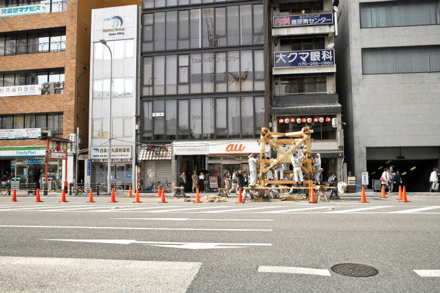
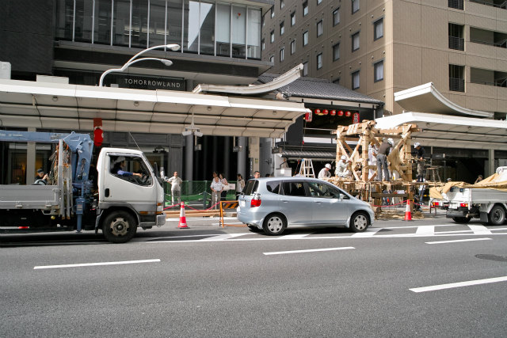

| ・ 縄がらみ (H29.07.10) | |||
M1全員とM2のHくんで去年より1日はやく来てみました．ちょうど山車を組み始め，縄がらみの最中でした．来年は12日ごろに行って，車輪の組み付けをみようかと思います．これはこれで貴重なのですが，正直ちょっと早かったです． |
|||
|
月鉾もまだまだ |
歪みと衝撃を吸収する構造 | ||
|
鶏鉾 |
真木の準備中 | ||
|
いろいろ見れました |

月鉾を向かいの道路から | ||
|

長刀鉾もまだまだ |
T口さん「オープンキャンパスの道具買ってくる」 | ||